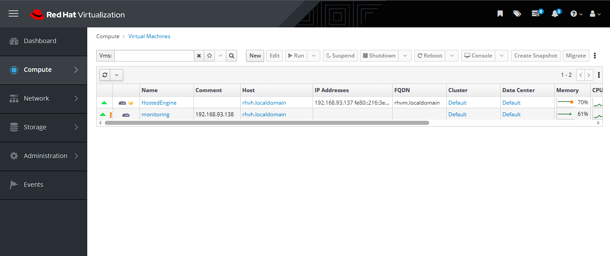
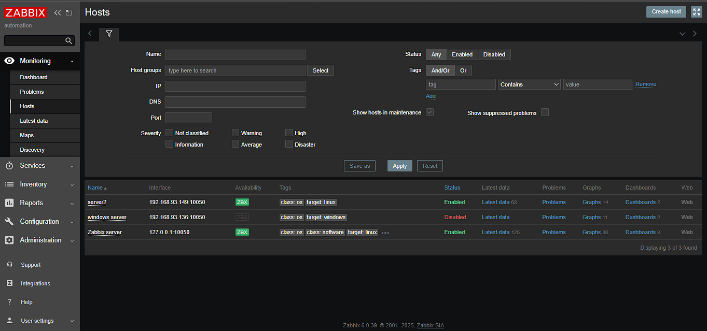
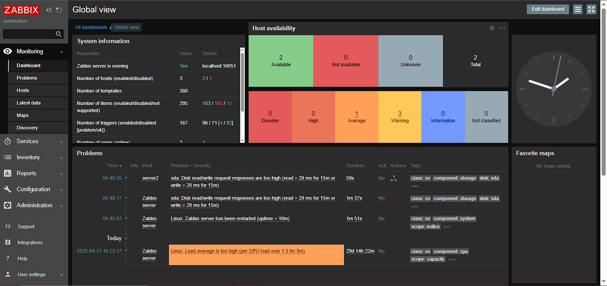
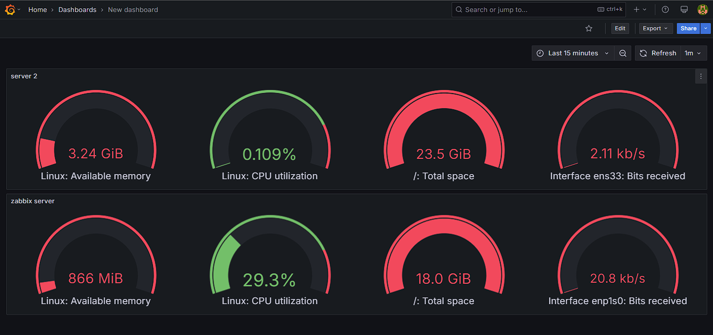
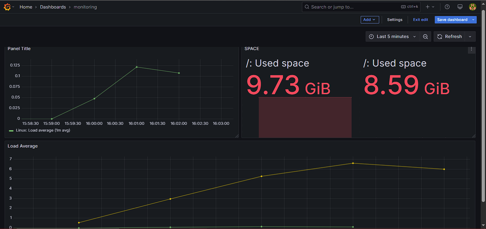
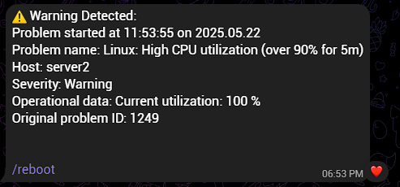

PROJECT 01 — INFRASTRUCTURE
Infrastructure monitoring and automation environment designed to monitor server resources, visualize infrastructure metrics, generate alerts, and automate operational tasks.
01 — OVERVIEW
This project focuses on building an infrastructure monitoring and automation environment for virtualized servers. The environment combines Zabbix for monitoring, Grafana for visualization, Python for custom monitoring logic and Telegram notifications, and Ansible for automated server operations.
02 — PROBLEM
Infrastructure monitoring can become difficult when administrators need to continuously check server resource usage and manually perform repetitive operational tasks.
The goal of this project was to create a centralized monitoring workflow and introduce automation for common infrastructure operations.
03 — ARCHITECTURE
04 — IMPLEMENTATION
Zabbix was configured to monitor infrastructure metrics including CPU utilization, memory availability and system status.
Grafana was integrated with monitoring data to provide centralized dashboards for infrastructure visibility.
Python-based monitoring logic was used to process infrastructure conditions and send notifications through Telegram.
Ansible playbooks were used to automate operational tasks such as server reboot and infrastructure management operations.
05 — MONITORING EVIDENCE
The monitoring environment was implemented across the virtualized infrastructure using Red Hat Virtualization, Zabbix and Grafana. The dashboards provide visibility into host availability, CPU utilization, memory usage, storage and network activity.
Red Hat Virtualization was used as the virtualization platform to manage the virtual machines monitored throughout the environment.

Zabbix was configured to monitor multiple hosts and collect infrastructure metrics including system availability, CPU, memory, storage and network data.

The Zabbix dashboard provides a centralized view of host availability, active problems, trigger severity and system information.

Grafana was used to visualize infrastructure metrics through dashboards covering CPU utilization, available memory, disk usage and network traffic.

Detailed host-level dashboards were used to inspect resource utilization and performance trends.

06 — ALERTING & AUTOMATION
Monitoring events were connected with custom notification and automation workflows. Infrastructure conditions could trigger Telegram notifications and operational actions.

A warning was generated when CPU utilization exceeded the configured threshold.
Monitoring events were delivered through Telegram to provide immediate operational notification.
07 — RESULT
The project combined infrastructure monitoring, visualization, alerting and automation into a single operational workflow. The implementation was designed to reduce repetitive manual checks and provide faster visibility when infrastructure conditions changed.
Built a monitoring environment using Zabbix to collect and monitor server availability, CPU, memory, storage and network metrics.
Integrated Grafana dashboards to provide a centralized view of infrastructure performance and resource utilization.
Developed monitoring and notification logic that sends infrastructure warnings to Telegram when defined conditions are detected.
Implemented Ansible playbooks to automate operational tasks and reduce repetitive manual intervention.
08 — TECHNOLOGIES